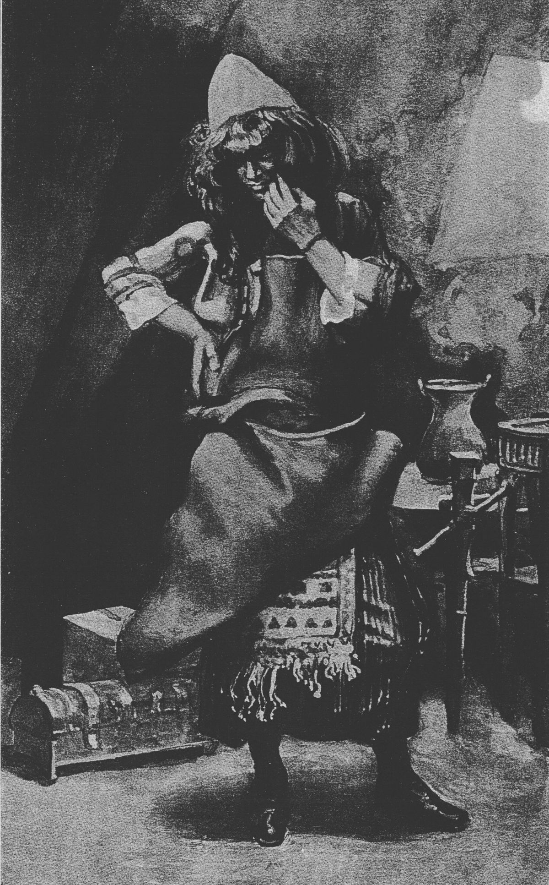

(Exodus 35:30-35) Then Moses said to the Israelites, "See, the LORD has chosen Bezalel son of Uri, the son of Hur, of the tribe of Judah, and he has filled him with the Spirit of God, with skill, ability and knowledge in all kinds of crafts -- to make artistic designs for work in gold, silver and bronze, to cut and set stones, to work in wood and to engage in all kinds of artistic craftsmanship. And he has given both him and Oholiab son of Ahisamach, of the tribe of Dan, the ability to teach others. He has filled them with skill to do all kinds of work as craftsmen, designers, embroiderers in blue, purple and scarlet yarn and fine linen, and weavers -- all of them master craftsmen and designers. 
The name "Bezalel" means "in the shadow [protection] of God." Bezalel is described in the genealogical lists as the son of Uri (Exodus 31:1), the son of Hur, of the tribe of Judah (I Chronicles 2:18, 19, 20, 50). He was said to be highly gifted as a workman, showing great skill and originality in engraving precious metals and stones and in wood-carving. He was also a master-workman, having many apprentices under him whom he instructed in the arts (Exodus 35:30–35). According to the narrative in Exodus, he was called and endowed by God to direct the construction of the tent of meeting and its sacred furniture, and also to prepare the priests' garments and the oil and incense required for the service.
Bezalel